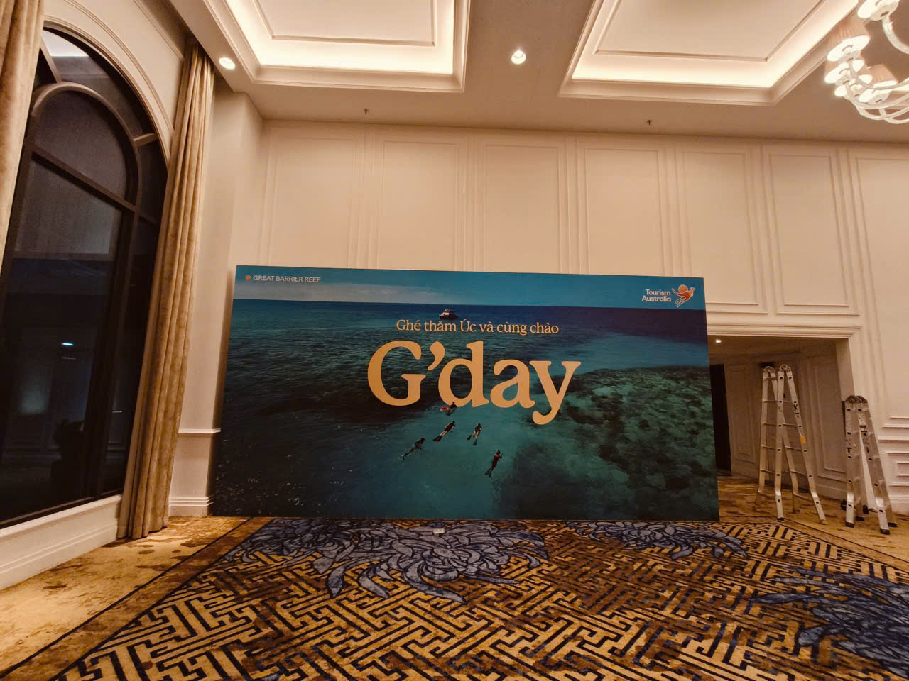
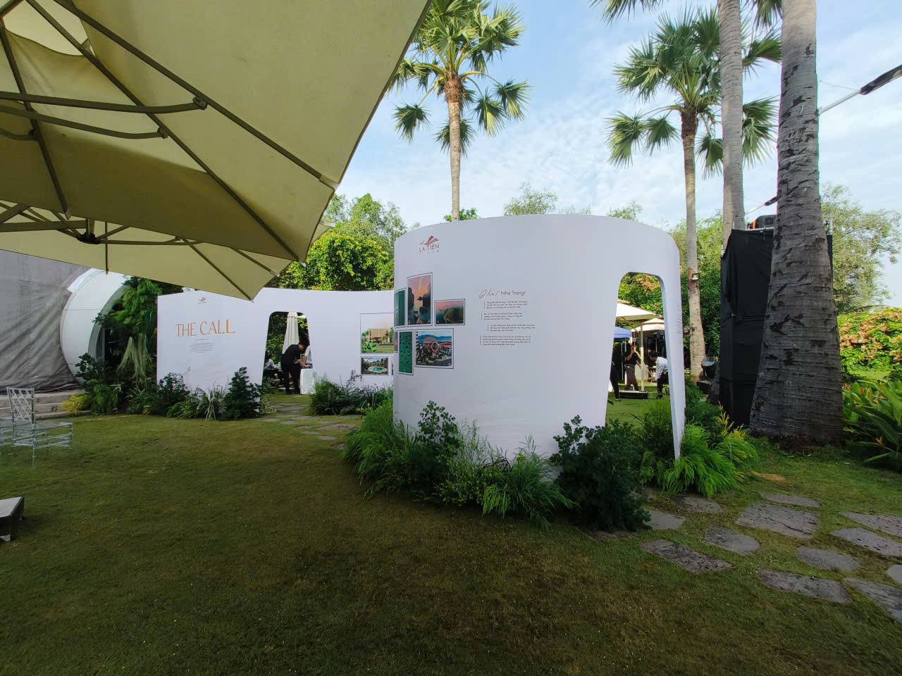
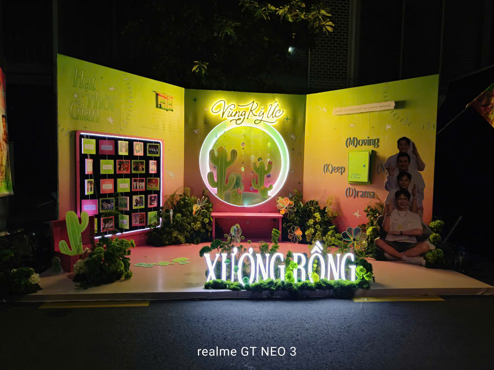

Backdrop Feel Hoiana
Thi công vách backdrop check-in ngoài trời với họa tiết hoa nổi 3D, mang phong cách thiết kế tối giản và thanh lịch.

Sự Kiện G'day
Sản xuất và lắp đặt backdrop căng khung kích thước lớn tại sảnh tiệc hội nghị, đảm bảo bề mặt phẳng phiu và sắc nét.

Vách Check-in Nghệ Thuật
Thi công vách ngăn uốn lượn độc đáo làm khu vực check-in và trưng bày cho sự kiện ngoài trời, kết hợp ánh sáng hắt tạo điểm nhấn.

Backdrop Vùng Ký Ức
Thiết kế góc check-in nổi bật với chữ nổi uốn mica phát sáng, kết hợp nghệ thuật sắp đặt cây xanh tạo không gian hoài niệm tuổi trẻ.